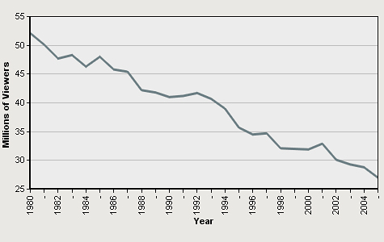
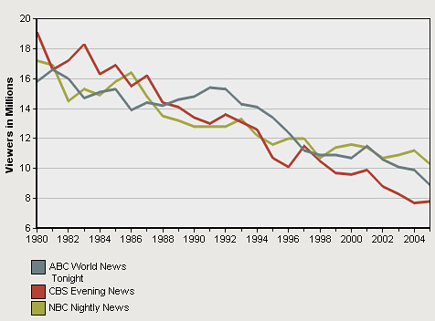

ABC News
The question about the lacrosse party photos arose at a time when ABC News was struggling to increase its viewership ratings. Like its two network rivals, CBS and NBC, ABC News had steadily lost market share and advertising revenue since the 1980s to newcomers in the television news market—cable news networks like CNN and commercial on-air enterprises like Fox News. Beginning in the 1990s, the picture grew even worse as viewers migrated away from television news altogether and toward the Internet.
Evening News Viewership, All Networks (November 1980 to November 2005)
Source: Nielsen Media Research, used under license, via Project for Excellence in Journalism.
* Ratings taken for month of November.
But ABC News had suffered a further blow in 2005 with the illness and death, in August, of iconic anchor Peter Jennings. Jennings for 22 years had been the public face of ABC’s most-watched news program, “World News Tonight.”[2] As of November 2005, viewership had dropped 10 percent from the previous year.[3] Months later, ABC News lost one of Jennings’ most promising replacements, Bob Woodruff, badly injured by a bomb while reporting from Iraq.
By the end of 2005, an average 8.9 million viewers watched ABC’s nightly newscast, compared to the 10.3 million who watched NBC’s “Nightly News” and the 7.8 million audience for the CBS “Evening News.”[4] ABC News executives had responded by shuffling other anchors—less famous, but still familiar—from one show to another, but as of the spring of 2006, ratings had not rebounded.
Evening News Viewership, by Network (1980 - 2005, November - November)Source: Nielsen Media Research, used under license, via Project for Excellence in Journalism.
Footnotes
[2] In addition to "World News Tonight," ABC News had six news programs, each with its own stylistic and editorial emphasis. “Good Morning America,” for instance, focused on special interest and general news; “20/20” on human interest stories; and “Primetime Live” on long investigative pieces.
[3] The State of the News Media, 2006, Project for Excellence in Journalism, Annual Report. "Nightly News’" November viewership had fallen 16 percent since 2000.
[4] Peter Johnson, “ABC Team Makes Formal Debut Tuesday,” USA Today, January 2, 2006.